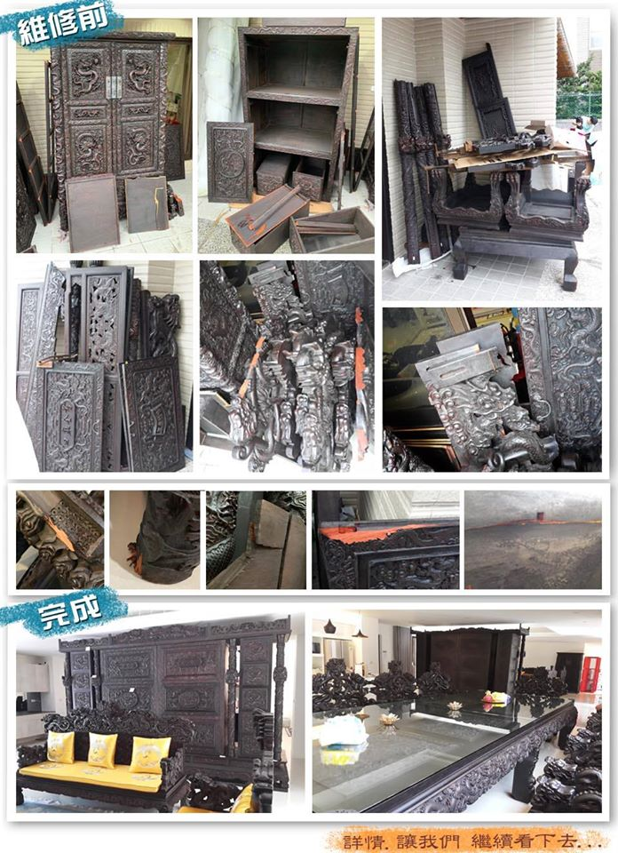
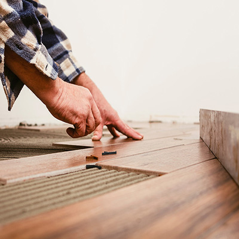

案例分享▼
-
步驟一：拆封
觀察部件翻新結構，並做好標記，以便後續的安裝。按原裝時相反的順序拆開。保持家具的完整性，並避免漆膜損傷。拆裝不可逆，盡量保持原狀。
-
步驟二：清洗
除去灰塵，部件上有黏著物，不能用濕布擦拭，否則會造成不同程度的傷害。
-
步驟三：打磨
舊漆面可用角磨機打磨，薄漆處可用刮刀進行處理，要求各部件到位，不留死角，油污，深淺一致。
-
步驟四：組裝
組裝需用特殊膠粉，按原結構組裝。整件家具無粉膠，四腳操平。
-

步驟五：做漆面或髹飾
不是簡單的刷漆，盡量保持原漆面，大多數擦蠟即可。揩漆和復漆需八至十道。漆膜需打磨，最好用人的頭發反復摩擦。要求是不留死角，色澤均勻一致。
大森傢俱專門販售各類實木家具，從打版設計、卡榫製作、木頭雕刻、噴漆、繃皮繃布...一條龍的設計製造。深黯各類家具的結構製作原理。 若您家中有壞掉的實木家具，不要急著丟，若木質不錯的翻修好甚至可再使用一~二十年。 若您的寶貝過去曾帶給您滿滿回憶，也請再給它一次機會，讓回憶可以延續。歡迎聯絡我們洽詢!! ...前往聯絡我們